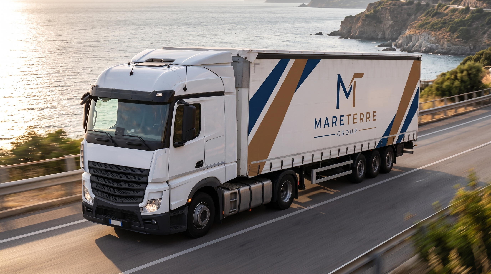
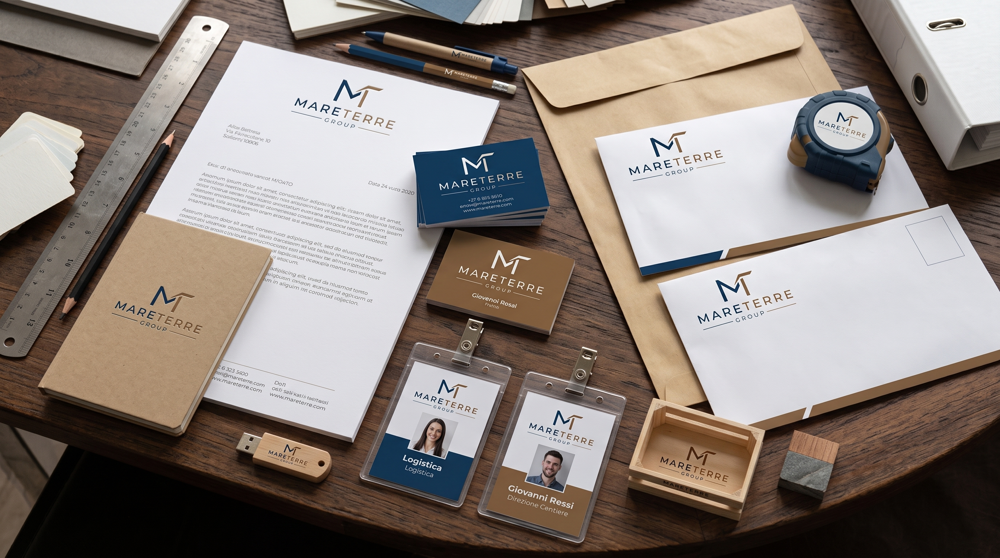
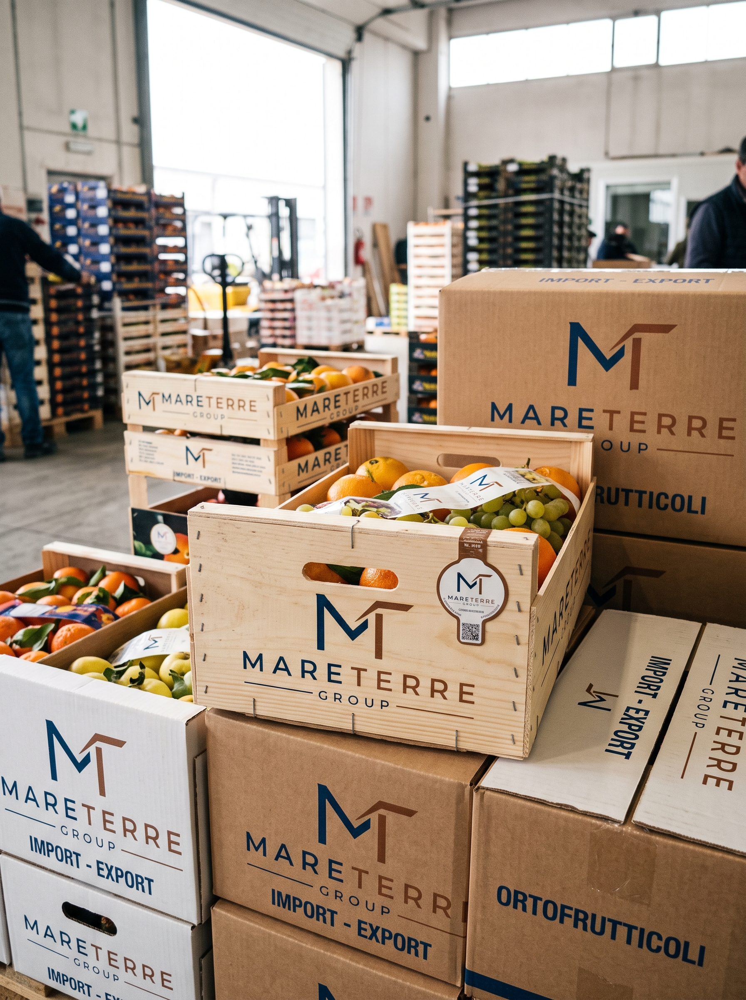
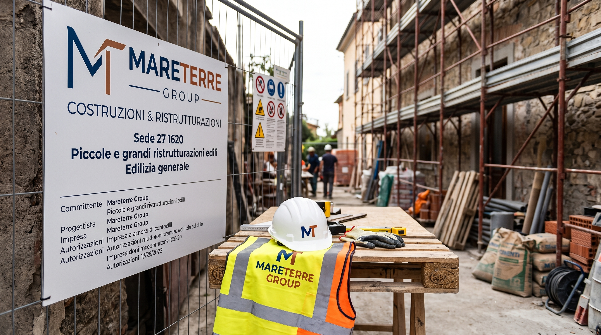

MARETERRE GROUP
Un’identità visiva solida e autorevole per una realtà aziendale polivalente, attiva sia nell'import-export ortofrutticolo su scala internazionale che nella ristrutturazione edilizia. Un monogramma geometrico capace di fondere gli elementi primari di terra e mare in un linguaggio corporate pulito, modulare e pronto per grandi formati.



«Due mondi, un'unica direzione: la solidità materica del costruire incontra la freschezza e il dinamismo delle rotte commerciali ortofrutticole.»


